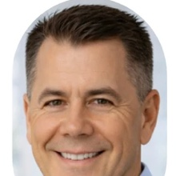

Company
It started with a measurement problem.
AquaMesh began as sensor research at UC San Diego in 2020 — through the Basement and Horizon accelerators — after a close look at how water is actually measured. The instruments were a generation behind, the large incumbents were moving slowly, and the available answers were bulky, expensive and slow without telling an operator anything they could act on.
Marine and environmental first
The measurement gap was most visible in the water itself, so that is where the work started: independent research from 2020, then in 2025 the development of the first AquaSpectra sensor with Scripps Institution of Oceanography — a broad-spectrum optical instrument built to read many parameters from one rugged device.
Why industrial now
Industrial plants have the same blind spots, with a cost attached: lost product, wasted energy and chemicals, downtime and compliance risk. They already record the data, they already know what an hour of downtime is worth, and an operator can act on a finding the same shift. The sensing is the same; the value comes back faster.
Founder
Alex Towfigh
Builds the platform — the data pipeline, the models that flag a divergence, the engineering the assistant reasons from, and the architecture that keeps every recommendation advisory. The person who answers when you write in.
info@aquamesh.aiAdvisors
Operators, process engineers and water-industry executives who have built and sold this kind of equipment before, and who keep the engineering honest.
-
Corey Williams
30+ years
Former SmartCover CEO, M&A lead at Badger Meter, Vice President at WEF.
-
John Williams
45+ years
Former executive at Inge, Hydranautics and Mann+Hummel, among others.
-

Greg Hitchcock
30+ years
Food operations leader at Leprino Foods, OSF Flavors and Carla's Pasta.
-
Than Hansen
25+ years
Water technology commercialization; founder of SkyH2O.
How we work in a plant
- Advisory by default. AquaMesh recommends; your operators decide. Nothing writes to your control system unless you turn it on, and you can return to advisory at any time.
- Read-only to start. The first engagement runs on the data you already keep. No new hardware, nothing to rip out if you stop.
- Your data stays yours. Isolated per customer at the database level, and handed back in open formats whenever you ask.
- Nothing hidden. Every recommendation carries its evidence and its cost, and every approval is logged.
Start with a conversation about your process.
Bring the thing that has been bothering you, and we'll look at whether your data already shows it.